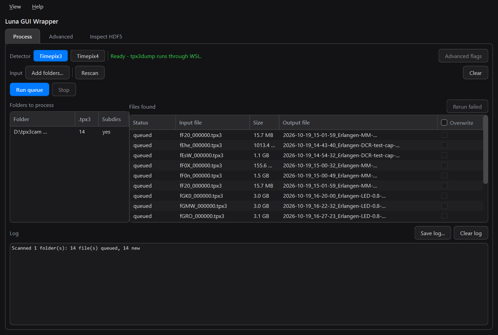

Overview
Luna GUI Wrapper is a desktop front end for batch-processing Timepix raw data
with ASI Luna’s converters: tpx3dump for Timepix3 .tpx3 files and
tpx4dump for Timepix4 .tpx4 files. Point it at one folder or twenty; it
finds every raw file underneath, names each output after the measurement it
came from, and runs the converter over the whole lot, instead of you typing
tpx3dump process -i INPUT_NAME.tpx3 -o OUTPUT_NAME.hdf5 # or tpx4dump ... .tpx4
once per file, with the right paths, the right ASI filename and the right working directory.
Important
Luna is not included. This project is only a graphical wrapper around
ASI Luna’s command-line tools; it contains no part of Luna and cannot convert
a single file by itself. You need your own licensed Luna installation from
ASI (Amsterdam Scientific Instruments). The GUI runs its unmodified
tpx3dump / tpx4dump as a subprocess, through the documented command-line
interface, so every .hdf5 is exactly what the converter would have written
had you typed the command yourself.
Job |
Done by |
|---|---|
Decoding raw data, clustering, writing the |
Luna’s |
Finding the files, naming the outputs, queueing, running, logging |
this GUI |
Running the Linux-only converter from Windows, through WSL |
this GUI |
Reading the |
this GUI (h5py; Luna is not involved) |
Built with Qt 6 (PySide6).

Timepix3 and Timepix4
Pick the chip with Detector on the Process tab. Each detector keeps its
own Luna folder and batch folders, and the Inspect tab tells the two kinds of
.hdf5 apart by their ToT values. Both converters write the same datasets
(PixelHits, Clusters, ExposureTimeBoundaries) with the same columns;
what differs:
Timepix3 |
Timepix4 |
|
|---|---|---|
Luna converter, raw files |
|
|
Pixels (55 µm pitch) |
256 × 256 per chip |
448 × 512 |
ToA in the |
units of 1e-13 s (100 fs) |
units of 1e-16 s (100 as) |
ToT in the |
ns, in 25 ns steps |
units of 1e-16 s, in 0.195 ns steps |
TDC edges, ToF, TDC columns |
yes |
no, see below |
Converter-only flags |
|
|
The units are those of Luna’s own unit-conversion example. Code reading these files must know which detector wrote them.
Why no TDC on Timepix4? It is a limit of Luna, not of this GUI. Luna
v0.4.4’s tpx4dump has no --tof-tdc-reference option, and the .hdf5 it
writes holds no /TDCEvents, so there are no trigger edges to compute ToF or
TDC columns from. If a later Luna adds them, the GUI’s TDC tools can be enabled for
Timepix4 too. Setting up Timepix4 is in
Usage.
Layout
Tab |
What it is for |
|---|---|
Process |
The whole everyday job: pick the detector, add input, press Run, watch the log. |
Advanced |
Luna folder, output placement, renaming, converter flags, command preview, script export. All optional. |
Inspect HDF5 |
Look inside a result: datasets, counts, ToA range, TDC edges, the rows themselves, six plots, and the button that writes the TDC columns. See Inspect HDF5. |
Help in the menu bar above the tabs (or F1) opens a Help window: what every tab, option and converter flag does, the name-template placeholders, the file’s columns and units, TDC, and troubleshooting, with a Find box. Its topics are also listed in the menu itself.
Left alone, the Process tab runs exactly
tpx3dump process -i NAME.tpx3 -o NAME.hdf5
per queued file (tpx4dump on Timepix4), writing the .hdf5 next to its raw
file. Any deviation turns the Advanced flags button on the Process tab
yellow, and a click lists it all: relocation, renaming, overwriting, and every
flag passed. Silently renamed or relocated output is the one surprise worth
never having.
The theme is in the View menu (light or dark), remembered between runs.